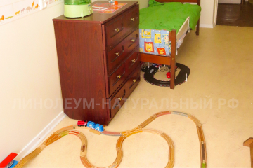
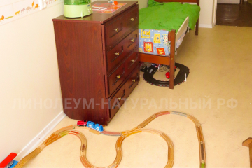

Натуральный линолеум фото в дизайн для квартиры на 8 линии
В проекте на фото в интерьере использована коллекция Мармолеум Реал (Marmoleum Real), артикул 2713. Как видно на фото, помещение было разделено на учебную и игровую зоны. Это стало возможным, так как натуральным линолеум не боится ножек кресел и столов, он устойчив к царапинам.
Натуральный линолеум в квартире
Рисунок натурального линолеума Marmoleum Real (на фото в интерьере) для проекта был подобран так, чтобы он гармонировал с цветом стен и мебели. Пастельные цвета под мрамор помогают скрыть мелкие загрязнения на поверхности пола, которые неизбежны в комнате, где живет ребенок. Покрытие можно использовать на протяжении долгих лет, меняя при этом мебель и стиль помещения. Мармолеум легко вписывается в любой интерьер, как для маленького ребенка, так и для подростка.
Натуральный линолеум Marmoleum Real (на фото в интерьере) часто используют для детских комнат. В состав натурального линолеума входит льняное масло, которое делает его бактерицидным. Это значит, что малыши могут совершенно безопасно находиться на нем в течение дня. Покрытие отвечает всем требованиям безопасности, оно экологично.
 

Используемые артикулы коллекции Real: